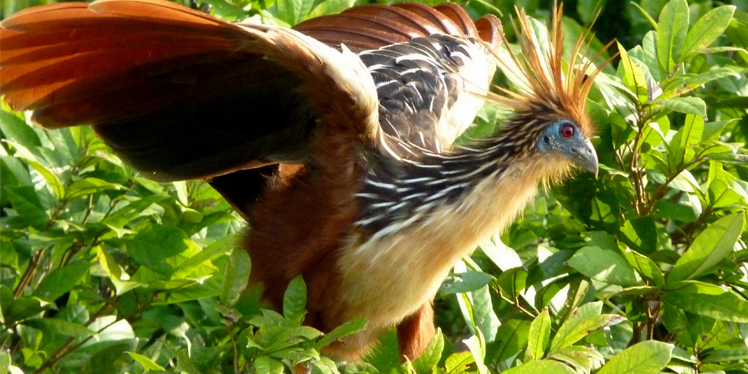

Hoatzin
AKA: Stinkbird, or Canje pheasant. Scientific Name: Ophisthocomus Hoazin Family: Opisthocomidae Species: O. hoazin Speed: Maximum 96 km/h Length: 60 – 70 cm Mass: 0.8 kg Wing Span: 90 – 100 cm Life Span:15 – 30 years Location: Amazon and South America. Diet: Leaves, flowers, and fruits.
Appearance:
Unfeathered blue face with maroon eyes. A long neck and small head.
Facts:
- It was described scientifically in 1776.
- Baby Hoatzin is born with 3 claws on each wing.
- Its digestive system ferments vegetation as a cow does.
- It builds the nest over water.